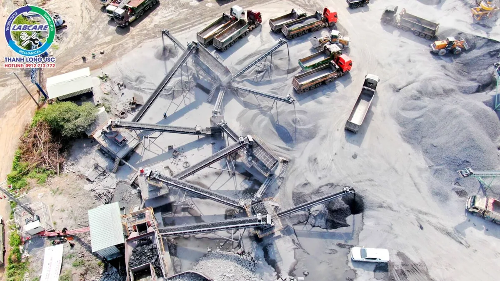
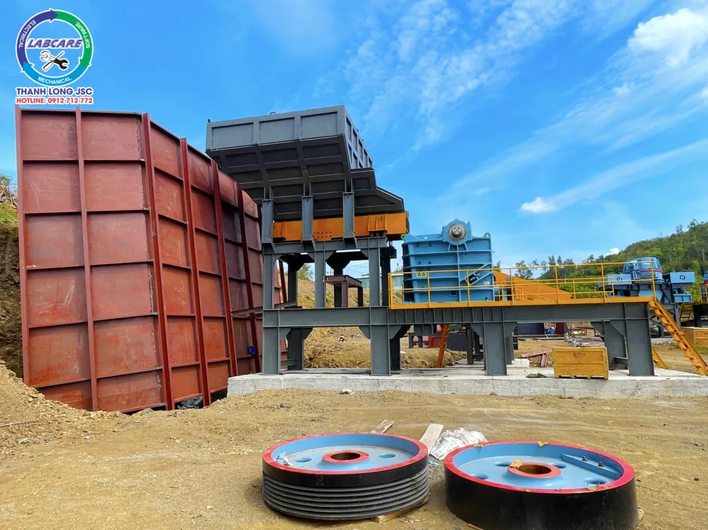
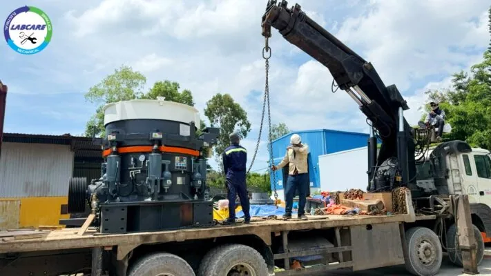
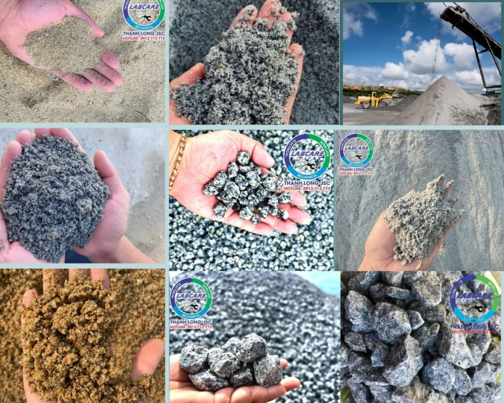
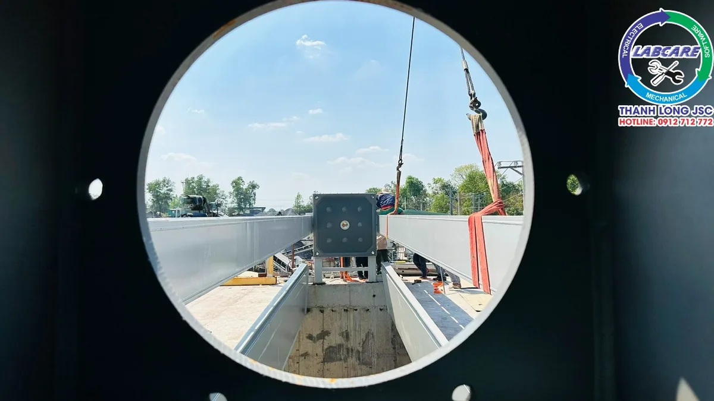
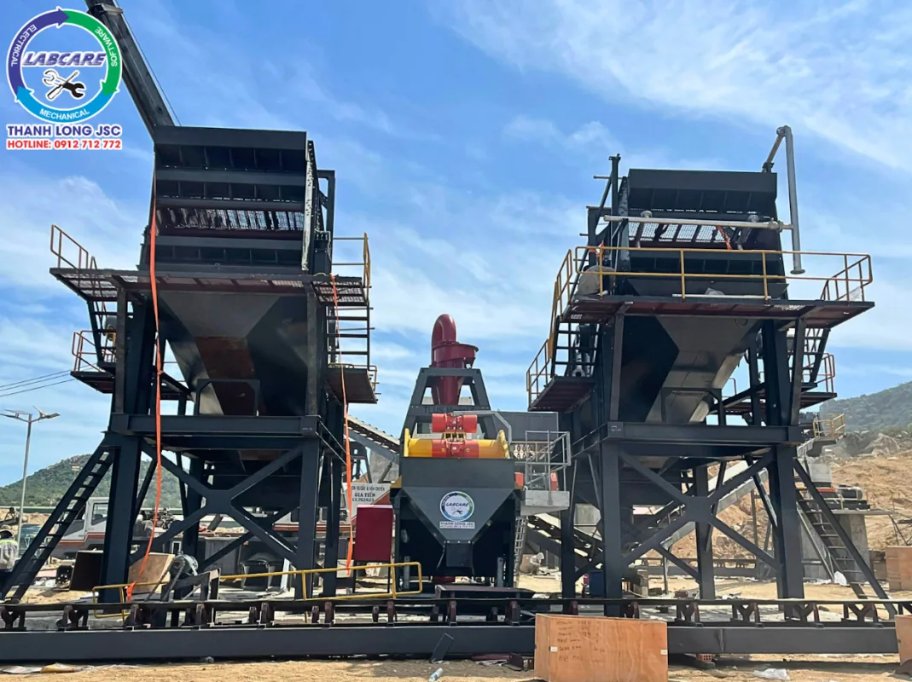
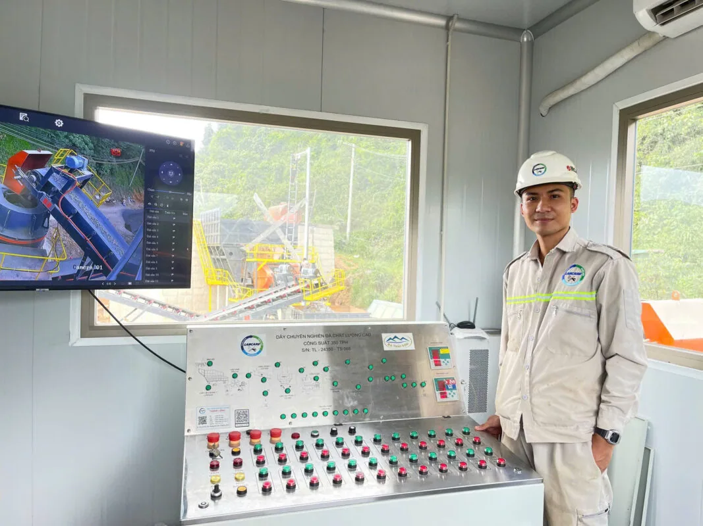

Máy nghiền đá xây dựng là thiết bị quan trọng trong các công trình xây dựng hiện đại. Với những lợi ích vượt trội về hiệu suất, tiết kiệm chi phí, và bảo vệ môi trường. Việc sử dụng máy nghiền đá không chỉ giúp nâng cao hiệu quả thi công mà còn góp phần bảo vệ tài nguyên và môi trường sống. Các ứng dụng đa dạng của máy nghiền đá ngày nay đã và đang giúp các dự án xây dựng đạt được chất lượng cao, thời gian hoàn thành nhanh chóng và chi phí tối ưu hơn.

Lợi Ích của Máy Nghiền Đá Xây dựng
1. Tối Ưu Hóa Chi Phí Vật Liệu
Máy nghiền đá giúp biến những khối đá lớn thành các loại đá nhỏ có kích thước phù hợp với nhu cầu sử dụng. Điều này giúp giảm chi phí mua nguyên vật liệu sẵn có từ các nhà cung cấp. Việc sở hữu một máy nghiền đá cho phép doanh nghiệp chủ động sản xuất các vật liệu cần thiết. Với chi phí thấp hơn nhiều. Đây là một giải pháp tiết kiệm chi phí đáng kể cho các nhà thầu. Giúp họ duy trì sự cạnh tranh trên thị trường.

2. Nâng Cao Hiệu Quả Sản Xuất
Máy nghiền đá hiện đại có khả năng xử lý đá với công suất lớn, giúp tối ưu hóa quy trình sản xuất. Với tốc độ nghiền nhanh và liên tục, thời gian hoàn thành công việc được rút ngắn. Nâng cao hiệu suất tổng thể của dự án xây dựng. Việc sử dụng máy nghiền đá còn đảm bảo tính nhất quán về chất lượng của sản phẩm đầu ra. Góp phần tạo ra các sản phẩm đạt tiêu chuẩn cao, đáp ứng yêu cầu khắt khe của ngành xây dựng.

3. Đa Dạng Hóa Kích Thước Sản Phẩm Đầu Ra
Một trong những ưu điểm nổi bật của máy nghiền đá xây dựng là khả năng tạo ra nhiều loại sản phẩm đầu ra với các kích thước khác nhau. Điều này rất quan trọng khi mỗi dự án xây dựng lại yêu cầu các loại đá có kích thước và đặc tính khác nhau. Từ cát, sỏi, đến các loại đá lớn, máy nghiền đá có thể đáp ứng mọi nhu cầu. Giúp nhà thầu linh hoạt trong việc lựa chọn và sử dụng vật liệu.

4. Giảm Thiểu Ô Nhiễm Môi Trường
Việc sử dụng máy nghiền đá cũng góp phần làm giảm tác động xấu đến môi trường. Thay vì khai thác nhiều đá từ các nguồn thiên nhiên. Máy nghiền tái sử dụng các loại đá thừa hoặc đá phế thải từ các dự án trước đó, giúp giảm áp lực lên tài nguyên thiên nhiên. Ngoài ra, các dòng máy nghiền hiện đại được thiết kế để giảm thiểu tiếng ồn và bụi bặm. Hạn chế ảnh hưởng đến môi trường xung quanh công trình.

5. Tăng Tính Chủ Động Trong Dự Án
Máy nghiền đá cho phép doanh nghiệp xây dựng tự chủ về nguồn cung vật liệu. Giảm thiểu phụ thuộc vào các nhà cung cấp bên ngoài. Việc này không chỉ giúp đảm bảo tiến độ thi công mà còn mang lại sự linh hoạ. Yêu cầu kỹ thuật ngay tại công trường, mà không cần phải chờ đợi quá lâu cho vật liệu từ bên ngoài.

6. Tiết Kiệm Nhân Công và Thời Gian
So với phương pháp truyền thống, việc sử dụng máy nghiền đá giúp tiết kiệm đáng kể chi phí nhân công và thời gian. Thay vì phải huy động nhiều công nhân để thực hiện quá trình đập đá bằng tay. Máy nghiền sẽ thực hiện toàn bộ công đoạn này với tốc độ nhanh hơn và độ chính xác cao hơn. Điều này không chỉ giảm thiểu rủi ro lao động mà còn gia tăng hiệu quả kinh tế cho doanh nghiệp.

7. Lợi Thế Cạnh Tranh
Việc sở hữu công nghệ máy nghiền đá hiện đại giúp các doanh nghiệp xây dựng tạo được lợi thế vượt trội. Không chỉ tiết kiệm chi phí, tăng năng suất, mà còn đáp ứng nhanh chóng các yêu cầu khắt khe của dự án. Đây là một trong những yếu tố then chốt giúp các nhà thầu xây dựng duy trì và phát triển bền vững trên thị trường.
Mua máy nghiền đá xây dựng ở đâu để nhận thấy sự khác biệt
Máy nghiền đá Thanh Long là đơn vị cung cấp các thiết bị về máy nghiền đá xây dựng
Nghiền cát, máy ép bùn, máy rửa cát và các thiết bị liên quan đến dây chuyền nghiền rửa cát và đá.
Là đơn vị cung cấp các thiết bị, vật tư phụ tùng thay thế cho các thiết bị trong dây chuyền nghiền.
Hotline: 0912 712 772